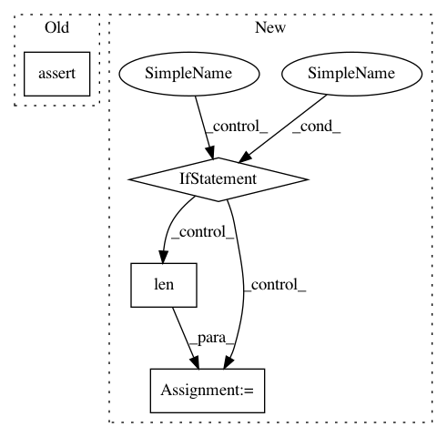

a076671d1f0da3d6297cbf3a9afdf1796c2e8e70,src/gluonnlp/data/stream.py,SimpleDatasetStream,_get_sampler,#SimpleDatasetStream#Any#,189
Before Change
self._kwargs = kwargs
def _get_sampler(self, sampler):
assert isinstance(sampler, str), "Expected sampler to be a str, but got %s"%type(sampler)
if sampler == "random":
return RandomSampler
if sampler == "sequential":
return SequentialSampler
After Change
def _get_sampler(self, sampler):
if isinstance(sampler, Sampler):
return sampler
if isinstance(sampler, str):
length = len(self._files)
if sampler == "random":
return RandomSampler(length)
if sampler == "sequential":
return SequentialSampler(length)
raise ValueError("file_sampler must be a supported str ("random", "sequential") or"
"a `gluon.data.Sampler`, but got %s"%(sampler))
def __iter__(self):
In pattern: SUPERPATTERN
Frequency: 3
Non-data size: 4
Instances
Project Name: dmlc/gluon-nlp
Commit Name: a076671d1f0da3d6297cbf3a9afdf1796c2e8e70
Time: 2019-01-06
Author: linhaibin.eric@gmail.com
File Name: src/gluonnlp/data/stream.py
Class Name: SimpleDatasetStream
Method Name: _get_sampler
Project Name: OpenNMT/OpenNMT-py
Commit Name: d0af494e81eb8612cbd688417204d2e21a5d4306
Time: 2017-08-23
Author: srush@seas.harvard.edu
File Name: onmt/Loss.py
Class Name: LossCompute
Method Name: computeLoss
Project Name: OpenNMT/OpenNMT-py
Commit Name: 7fb5e9256e0e9ddab8ec7854fdf11fcdb5717a45
Time: 2018-09-05
Author: pltrdy@gmail.com
File Name: onmt/inputters/dataset_base.py
Class Name: DatasetBase
Method Name: extract_text_features